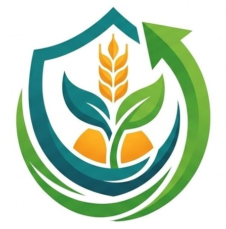

Donar alimentos
Publica los alimentos que quieres donar para que otras personas puedan solicitarlos fácilmente.

RedAlimentoPublica los alimentos que quieres donar para que otras personas puedan solicitarlos fácilmente.
Revisa el listado de alimentos disponibles, sus tipos, categorías y cantidades en tiempo real.
Selecciona un alimento disponible y envía una solicitud formal indicando la cantidad que necesitas.
Facilitamos el acceso a recursos alimentarios básicos mediante redes de donación solidaria.
Buscamos activamente reducir el desperdicio alimentario aprovechando excedentes de forma eficiente.
Cada aportación solidaria abre una nueva oportunidad para ayudar a nuestra comunidad.


Descubre cómo trabajamos cada día para recolectar, almacenar y repartir esperanza entre quienes más lo necesitan.